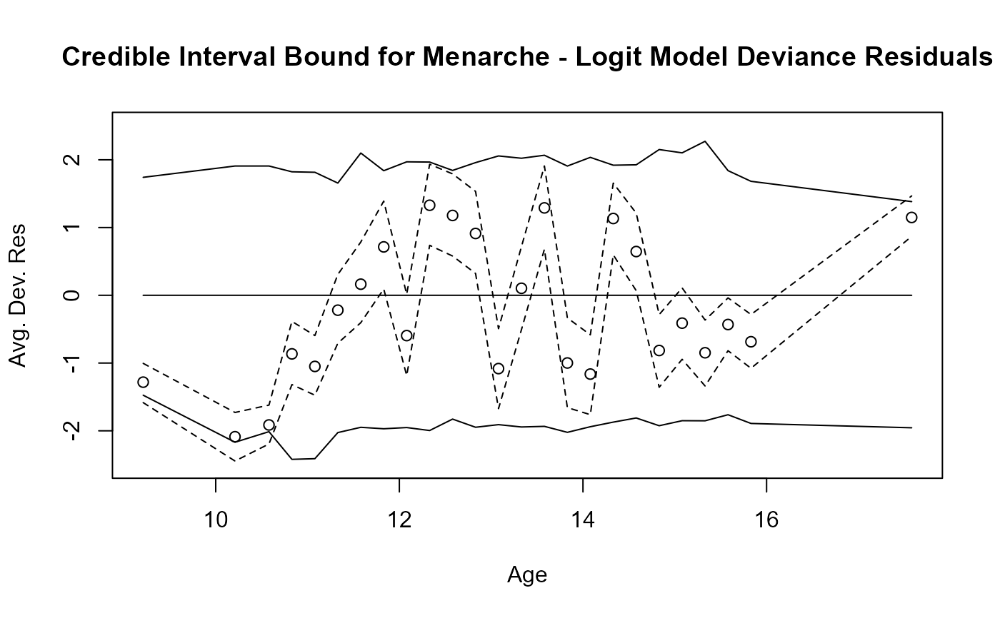

simulate.glmb.RdSimulate responses from the distribution corresponding to a fitted glmb object.
# S3 method for class 'glmb'
simulate(object, nsim = 1, seed = NULL, ...)An object of class glmb, typically the result of a call to the
function glmb.
Defunct (see below).
an object specifying if and how the random number generator should be initialized (seeded).
Additional arguments passed to the function. Will frequently include a matrix pred of simulated predictions from the predict function, the family (e.g., binomial) and an optional vector of weights specifying prior.weights for the simulated values (default is 1)
Simulated values for data corresponding to simulated model predictions that correspond either
to the original data or to a newdata data frame provided to the predict function.
data(menarche2)
## ----Analysis Setup-----------------------------------------------------------
## Number of variables in model
Age=menarche2$Age
nvars=2
## Reference Ages for setting of priors and Age_Difference
ref_age1=13 # user can modify this
ref_age2=15 ## user can modify this
## Define variables used later in analysis
Age2=menarche2$Age-ref_age1
Age_Diff=ref_age2-ref_age1
mu1=as.matrix(c(0,1.098612),ncol=1)
V1<-1*diag(nvars)
V1[1,1]=0.18687882
V1[2,2]=0.10576217
V1[1,2]=-0.03389182
V1[2,1]=-0.03389182
Menarche_Model_Data=data.frame(Age=menarche2$Age,Total=menarche2$Total,
Menarche=menarche2$Menarche,Age2)
glmb.out1<-glmb(n=1000,cbind(Menarche, Total-Menarche) ~Age2,family=binomial(logit),
pfamily=dNormal(mu=mu1,Sigma=V1),data=Menarche_Model_Data)
#> Warning: non-integer #successes in a binomial glm!
# Prediction from original model
pred1=predict(glmb.out1,type="response")
## Get Original Residuals, their means, and credible bounds
res_out=residuals(glmb.out1)
colMeans(res_out)
#> 1 2 3 4 5 6 7
#> -1.2819588 -2.0872330 -1.9134756 -0.8646188 -1.0495764 -0.2197056 0.1640214
#> 8 9 10 11 12 13 14
#> 0.7144484 -0.5946788 1.3289339 1.1784852 0.9124293 -1.0816999 0.1035457
#> 15 16 17 18 19 20 21
#> 1.2900397 -0.9987810 -1.1626076 1.1333994 0.6458807 -0.8146461 -0.4108832
#> 22 23 24 25
#> -0.8479717 -0.4311261 -0.6854849 1.1489057
## Set up to simulate new data and residuals
res_mean=colMeans(res_out)
res_low1=apply(res_out,2,FUN=quantile,probs=c(0.025))
res_high1=apply(res_out,2,FUN=quantile,probs=c(0.975))
## Simulate new data and get residuals for simulated data
ysim1=simulate(glmb.out1,nsim=1,seed=NULL,pred=pred1,family="binomial",
prior.weights=weights(glmb.out1))
res_ysim_out1=residuals(glmb.out1,ysim=ysim1)
res_low=apply(res_ysim_out1,2,FUN=quantile,probs=c(0.025))
res_high=apply(res_ysim_out1,2,FUN=quantile,probs=c(0.975))
# Plot Credible Interval bounds for Deviance Residuals
plot(res_mean~Age,ylim=c(-2.5,2.5),
main="Credible Interval Bound for Menarche - Logit Model Deviance Residuals",
xlab = "Age", ylab = "Avg. Dev. Res")
lines(Age, 0*res_mean,lty=1)
lines(Age, res_low,lty=1)
lines(Age, res_high,lty=1)
lines(Age, res_low1,lty=2)
lines(Age, res_high1,lty=2)
